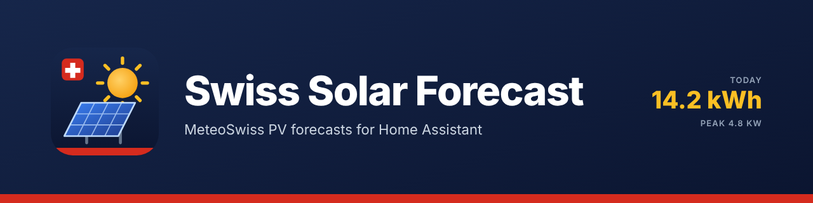

PV production forecast from the MeteoSwiss local forecast: global and diffuse radiation, hour by hour for nine days, projected on your roof planes. Pick the planes from the Sonnendach solar cadastre by address or map marker, enter the figures, and the plant appears in the energy dashboard's solar forecast — no account, no API key.
PV-Ertragsprognose aus der MeteoSchweiz-Lokalprognose: Global- und Diffusstrahlung, stündlich für neun Tage, umgerechnet auf deine Dachflächen. Die Flächen wählst du per Adresse oder Kartenmarker aus dem Sonnendach-Kataster, trägst die Werte ein, und die Anlage erscheint als Solarprognose im Energie-Dashboard – ohne Konto, ohne API-Schlüssel.
Prévision de production PV à partir de la prévision locale de MétéoSuisse : rayonnement global et diffus, heure par heure sur neuf jours, projeté sur vos pans de toit. Choisissez les pans dans le cadastre solaire Toitsolaire par adresse ou marqueur, saisissez les valeurs, et l'installation apparaît dans la prévision solaire du tableau de bord énergie – sans compte, sans clé API.
Previsione di produzione FV dalla previsione locale di MeteoSvizzera: radiazione globale e diffusa, ora per ora per nove giorni, proiettata sulle vostre falde. Scegliete le falde dal catasto solare Tettosolare per indirizzo o marcatore, inserite i valori e l'impianto compare nella previsione solare del quadro energia – senza account, senza chiave API.
Highlights
Das kann die Integration
Points forts
Punti di forza
Diese Liste gibt es nur auf Englisch.
Cette liste n'existe qu'en anglais.
Questo elenco è disponibile solo in inglese.
- Your roof from the solar cadastre: type your address or drop the marker on the roof, and the planes of that building appear from Sonnendach, the Swiss solar cadastre of the Federal Office of Energy — orientation, tilt, area, suitability class and long-term yield. Tick every plane that carries modules, correct what you know better, done. No guessing of azimuths; a plane the cadastre does not know is entered by hand.
- The MeteoSwiss forecast, on your roof: global and diffuse radiation from the official model, projected on your module plane (azimuth, tilt), with the cell temperature from the forecast air temperature and wind, your system losses and the inverter limit. No guessed cloud factors.
- Mountains and valley sides count: the horizon of your place is read once from the swisstopo elevation model. While the sun stands behind a ridge, the direct beam is left out and only the diffuse light counts — the late sunrise and the early sunset of a valley are in the forecast.
- Follows the sky of the last hour: the nearest MeteoSwiss measurement station tells every ten minutes how much light really arrives. When that is less — or more — than the model expected, the hours just ahead are corrected, fading out over three hours. No meter and no setting needed.
- A day that adds up: an hour that is over keeps the value it ended with. A later model run no longer rewrites the morning, so the day's total in the evening is what was forecast for it — and with a yield meter, the finished hours count with what the plant really produced.
- Learns from your own meter: name the energy sensor of your plant — right at the setup or later — and the integration compares every hour what was forecast with what was counted. It learns one factor per part of the sky the sun stands in: the tree that shades the roof while the sun is low in the south-east, the building next door in the evening, soiling, a plant that simply does better than the textbook. Because it goes by the sun's position and not by the clock, what was learned in October still fits in February.
- Snow on the modules: after a snowfall a radiation forecast alone is far too high. The integration follows the snow from the forecast — what falls in the cold covers the modules, steep modules clear sooner than flat ones — and takes the covered share out of the forecast until it has slid off or melted. A sensor shows the cover and when the modules are expected to be free.
- Low stratus: on the Plateau the grey lid of autumn and winter decides the day, and when it opens is the hardest thing a weather model has to tell. The integration recognises these hours from the cloud layers of the forecast — a closed low layer under an open sky — and shows how many of today's daylight hours lie under it and when it is expected to open. With a yield meter they are learned on their own, apart from the shadows of the sunny hours.
- Tells you how good it is: with a meter, two sensors show the accuracy of the forecast over the last 7 and 30 days, measured against what your plant really produced.
- Energy dashboard: the forecast appears as solar production forecast in the energy dashboard, like Solcast or Forecast.Solar — without an account or a daily request limit.
- Sensors that automations can use: energy today, tomorrow, the day after and the rest of today; power now and next hour; today's peak and when it comes. Hourly values for nine days as attributes.
- Several roofs, one plant: all planes in one entry, with the plant's totals and a sensor per plane; the energy dashboard gets the sum.
- A yardstick: with a cadastre roof, a sensor shows the long-term expectation of a day in this month and the forecast as a percentage of it — "today 60 % of a normal November day".
- Damping by hand: without a meter, a damping factor per plane scales the result once you have compared a few weeks with your real yield.
- Learns what the weather model gets wrong: day after day the same station shows whether the model lets too much or too little light through a clear, a broken and a grey sky. After a few hours of a kind, the coming hours with that sky are corrected: the rest of today, tomorrow and the days after. No meter, no setting and no extra traffic.
- Reads sparingly: one HEAD request every 15 minutes tells whether a new model run exists (two in the few minutes after the full hour, while the run of that hour is not out yet); only then are the parameter files read. Four of them cost about 160 KB together with every hourly run; the two cloud layers (about 40 KB each) are read with every third run; the temperature file is laid out differently and costs 2.3 MB, so it is read every six hours only. The series of a file that is not read are kept in between. That makes about 14 MB a day. While the sun is up, the nearest measurement station's file of the day (about 20 KB) is read once in 15 minutes: up to 1 MB a day in summer, a third of that in winter. Diagnostics sensors show the traffic.
- Set up in a minute: from your Home Assistant location or by typing a place or postal code; German, English, French and Italian; repairs notice when the data cannot be read; diagnostics download with your location redacted.
How to install
Installation
Installation
Installazione
Click Add to Marketplace to add the repository to the Home Assistant Marketplace (formerly HACS), download it and restart Home Assistant. Then add the integration under Settings → Devices & services. Free and open source, no account needed. The full documentation is in the README on GitHub.
Klicke auf Zum Marketplace hinzufügen, um das Repository zum Home Assistant Marketplace (früher HACS) hinzuzufügen, lade es herunter und starte Home Assistant neu. Füge die Integration danach unter Einstellungen → Geräte & Dienste hinzu. Kostenlos und quelloffen, kein Konto nötig. Die ganze Dokumentation steht im README auf GitHub (englisch).
Cliquez sur Ajouter au Marketplace pour ajouter le dépôt au Marketplace de Home Assistant (anciennement HACS), téléchargez-le et redémarrez Home Assistant. Ajoutez ensuite l'intégration sous Paramètres → Appareils et services. Gratuit et open source, sans compte. La documentation complète se trouve dans le README sur GitHub (en anglais).
Fai clic su Aggiungi al Marketplace per aggiungere il repository al Marketplace di Home Assistant (ex HACS), scaricalo e riavvia Home Assistant. Aggiungi poi l'integrazione in Impostazioni → Dispositivi e servizi. Gratuito e open source, nessun account necessario. La documentazione completa è nel README su GitHub (in inglese).
More integrations
Weitere Integrationen
Autres intégrations
Altre integrazioni
Swiss MeteoSwiss WatersSwiss Public AlertsSwiss Avalanche BulletinSwiss EarthquakesSwiss Hail ProtectionSwiss TransportSwiss Charging StationsAustrian Charging StationsSwiss ParkingSwiss Shared MobilitySwiss Electricity PriceSwiss Solar Reference PriceInnoxel Master 3RD30 Digital InterfaceSwiss Lottery